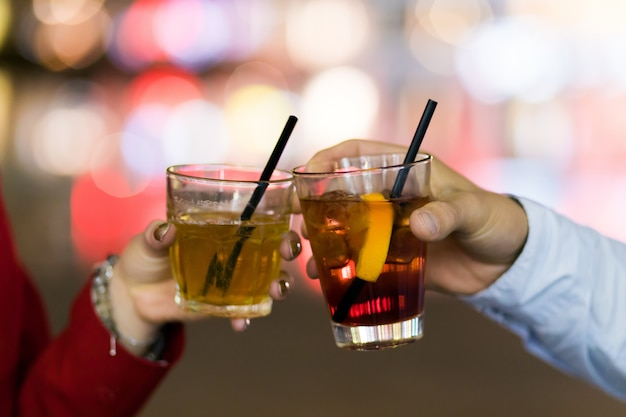
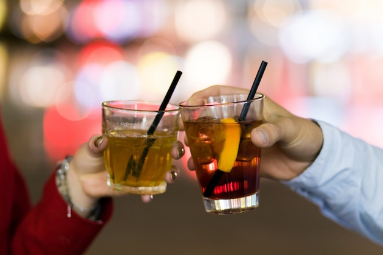

Brindis! Salud! Cheers! Salute!
Alguna vez te preguntaste de donde proviene esta costumbre?
Existen distintos tipos de vasos y copas para toda ocasión. Cada elemento tiene un determinado tamaño y uso de acuerdo al tipo de bebida, y En Sodimac te ayudaremos a encontrar el que tú necesitas.

Alguna vez te preguntaste de donde proviene esta costumbre?
El brindis es una muestra de cariño y amor, un símbolo de confianza y familiaridad en el que los participantes desean salud al resto.